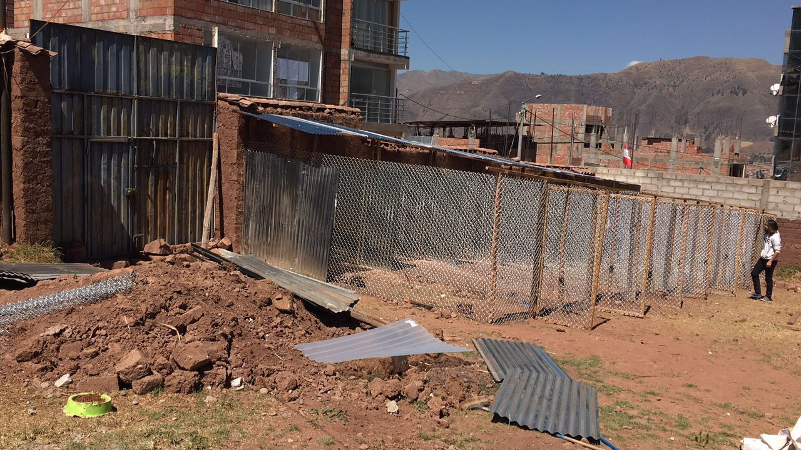
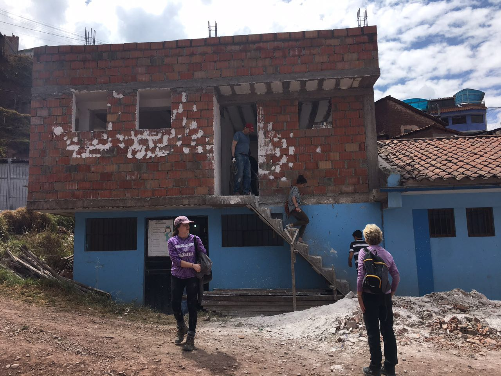
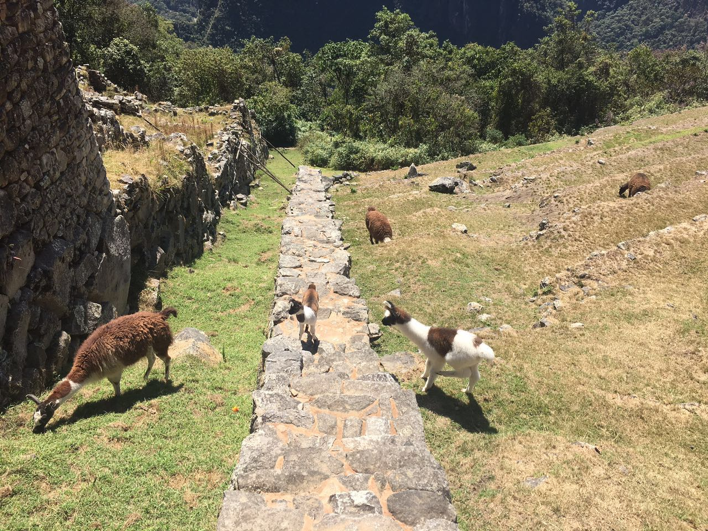
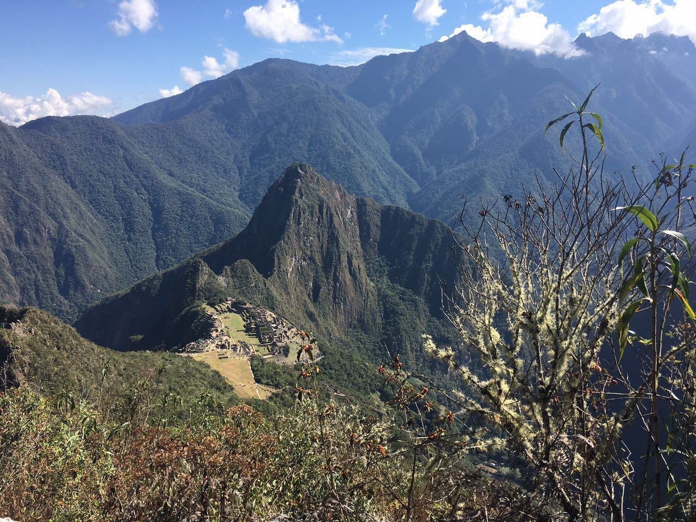

My trip to Peru, Cusco was very meaningful and truly helped me inquire many enriching experiences that will stay with me forever. In the first week, I did the Construction and Renovation Project. I with other volunteers built shelter for homeless dogs, and built a health center for local nearby community.
 During the second week, I visited Machu Picchu. I hiked halfway through the top and obtained an excellent panoramic view of Machu Picchu. Even though I was very tired from everything, it was all worth it at the end. Additionally, the llamas there were friendly to tourists; when you would walk closer to them, they were happy to take pictures with tourists.
 